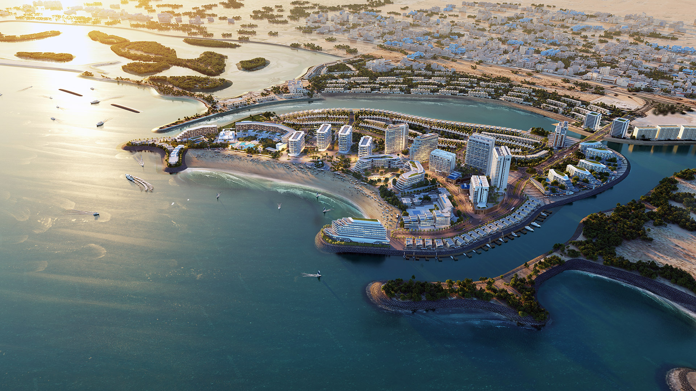

Flood Risk Assessment & Mitigation
Coastline Equilibrium and Protection

Lagoons Circulation and Hydrodynamic Studies

Subsurface & Excess Irrigation Network


With over 35 years of experience, AIEcons excels in civil engineering, specializing in flood protection, storm drainage, groundwater management, marine and coastal works, and water supply systems.
Establish a leading, innovative organization excelling in a competitive environment, leveraging our team's expertise and skills to serve the community and enhance engineering consultancy standards.
We excel in planning, designing, and managing water resource projects with a focus on innovation and sustainability, covering hydrological analysis, groundwater modeling, and structural design for effective flood control and environmental protection.

Co-Founder

Co-Founder
Co-Founder & CEO

Co-Founder & Technical Director

Currently, there are no open vacancies, but you can apply here to contact you whenever we're ready
The best way to contact us is to use our contact form below. Our team is always ready to assist you and ensure you receive the support you need.
To reach out to us via email at info@aiecons.com
OR
.png)